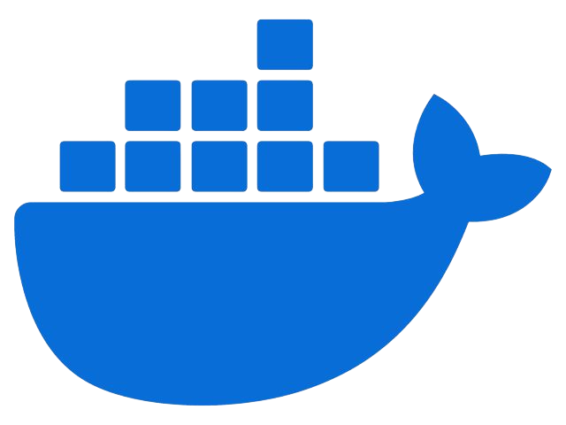

Programming Tools

CSS

HTML

JavaScript

Python
VSCode

Docker
Perkenalkan, saya Rendi Ramadhan. Saya memiliki latar belakang dan minat di bidang Teknik Jaringan dan Telekomunikasi, dengan pengalaman dalam pengelolaan infrastruktur jaringan, konfigurasi perangkat, serta penerapan keamanan data. Saya berkomitmen untuk terus mengembangkan kompetensi di bidang teknologi komunikasi guna memberikan kontribusi nyata dalam meningkatkan kualitas konektivitas dan layanan digital.
CSS
HTML
JavaScript
Python
VSCode
Docker
Jurusan Teknik Jaringan Telekomunikasi dan Komputer merupakan program studi yang memadukan bidang teknik elektro dan ilmu komputer, dengan fokus pada pengembangan sistem perangkat keras, perangkat lunak, serta jaringan komputer.